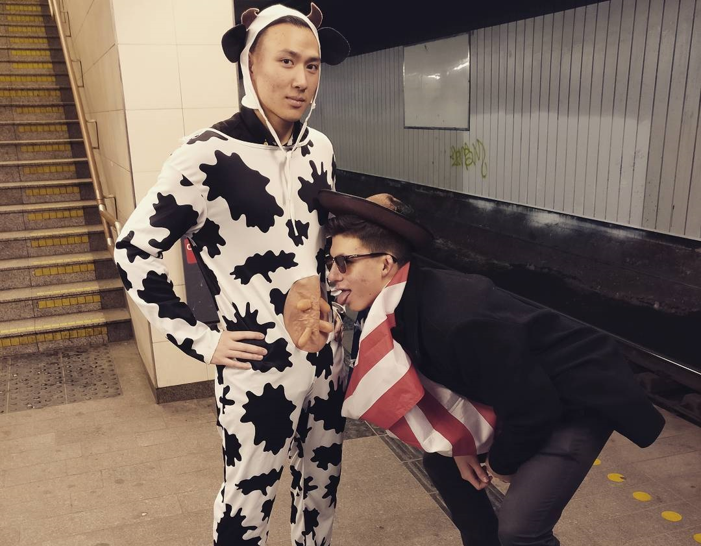
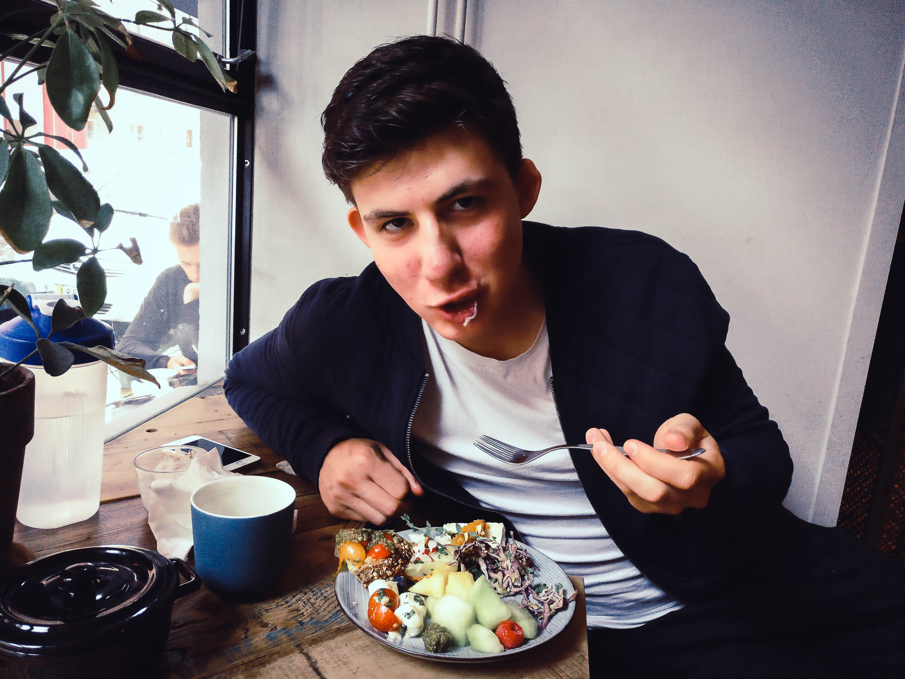

Alex was one of the first friends that I made in Copenhagen. All it took was a few minutes of small talk to know that we would hit it off. We had similar music tastes and both played basketball, but those weren't main reasons that we became close. The ability to have real conversations and a lighthearted sense of humour are why I consider Alex one of the best friends that I made on exchange.
Oh, and the fact that we did this together. Shared embarassment always brings people closer together.
During our first conversation, Alex mentioned that he had coached basketball in his community, and that lead to him talking about his goal to make an impact on the world around him. Very quickly the conversation shifted from surface level get-to-know-you talk to something a bit deeper, and at the time it was really refreshing.
I found out that Alex has worked with a bunch of non profits, and is actively pursuing a career in that sector after graduation. A lot of people, myself included, think about their future career in terms of salary, or location, or workload, but Alex was determined to make a difference first, and worry about the rest of it afterwards.
Just because Alex has depth, doesn't mean that he takes himself too seriously. Here's some evidence. He captioned this photo "One Magnificent Beast Riding Another". Stay classy Alex.

The other thing that struck me about Alex was how close he was to his brothers. He talked frequently about his younger brother's high school basketball career, love of cooking, and future prospects. As for his older brother, Alex told me about his varied taste in music and his deep dive into the field of astrophysics.
When he was telling me all this, I thought about my own brother, and how we weren't very close at all. More and more as I heard about Alex's siblings, it made me want to connect to my brother on a closer level. If you're reading this Alex, my brother has you to thank for the Kendrick concert ticket I'm giving him.
Over the past five months I've gone on plenty of adventures with Alex, from carrying around a Christmas tree in Berlin to walking around central Copenhagen in ridiculous costumes. I made a friend that I was able to joke around with at the most immature level, then switch into a meaningful conversation about feelings (Alex has a lot of them), all while munching out on a brunch date.
 All in all, very glad I met this guy, and I know we'll get back in touch soon.